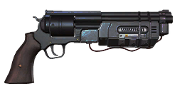
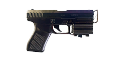
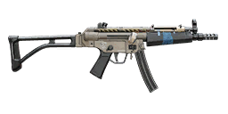
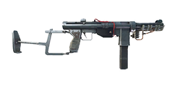
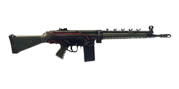
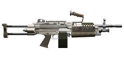
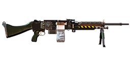
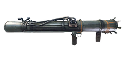
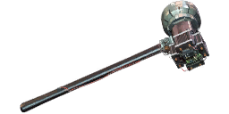

What makes a weapon experimental
Experimental is a sixth quality (6 crowns, pink badge) that only some weapons have. Each experimental weapon is a separate item with its own name and its own special behaviour – a railgun Pvg 90, flechette shotgun shells, an electric sledgehammer. In the game files it is the weapon's Q6 item, and for most of them it comes with its own ammo values that replace the normal ones when fired from it.
- Damage multiplier: ×1 at Experimental, the same as Special for every weapon except the Kvm 89 Squad Automatic Weapon (Special ×1.1).
- Augments: experimental weapons take none.
- Ammo: a set of experimental-only rounds (listed below) is made for them.
- Placed loot: none. The hand-placed weapons in the world files go up to Special.
Experimental weapons15
Every weapon with an experimental version. The name opens the experimental section of the weapon's page, with its full ammo table.
| Experimental | Base weapon | Category | What the files change | |
|---|---|---|---|---|
 | Experimental .44 Magnus | .44 Magnus | Handguns | Explosive Magnus ammo (4 entries) |
 | Experimental Klaucke 17 | Klaucke 17 | Handguns | No separate values in the files |
 | Experimental HP5 SMG | HP5 | Submachine guns | No separate values in the files |
 | Experimental M/46 "Kpist" SMG | M/46 "Kpist" SMG | Submachine guns | No separate values in the files |
 | Experimental AG 4 | Automatgevär 4 | Assault rifles | Incendiary ammo (4 entries) |
 | Experimental AI-76 Assault Rifle | AI-76 Assault Rifle | Assault rifles | Own values for 34 ammo types of 9 other calibres |
 | Experimental Kvm 89 | Kvm 89 Squad Automatic Weapon | Machine guns | Own values for 4 ammo types |
 | Experimental Kvm 59 Machine Gun | Kvm 59 Machine Gun | Machine guns | Electric ammo (4 entries) |
 | Experimental Meusser Hunting Rifle | Meusser Hunting Rifle | Hunting rifles | High Voltage Battery Mag ammo (2 entries) |
 | Experimental "Älgstudsare" | "Älgstudsare" Hunting Rifle | Hunting rifles | Own values for 4 ammo types |
 | Experimental Pvg 90 | Pansarvärnsgevär 90 | Sniper rifles | Railgun ammo (2 entries) |
 | Experimental 12G Pump-Action | 12G Pump-Action | Shotguns | Flechette ammo (5 entries) |
 | Experimental Sjöqvist Semi-Auto | Sjöqvist Semi-Auto | Shotguns | Dragon's Breath ammo (2 entries) |
 | Experimental Grg m/49 | Granatgevär m/49 | Launchers | No separate values in the files |
 | Experimental Sledgehammer | Sledgehammer | Melee | Electric discharge and Electric stun at 3 charge levels |
Experimental-only ammo22
The game files flag these rounds as experimental-only. The ammo pages have their full stats; Loaded by lists the experimental weapons that have the round in their ammo list.